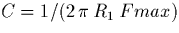

Next: 3 La numrisation du
Up: Comment faire son propre
Previous: 1.3 Schma synoptique
Tout d'abord, il est ncessaire d'alimenter les postes tlphoniques, et
cela s'effectue au moyen d'un gnrateur de tension continue de
35V![[*]](/latex2html/icons.gif/foot_motif.gif) . Du poste ne sortent que deux fils lectriques, entre lesquels
s'tablit une ddp variable (signal de
"parole" dont les frquences varient entre 300Hz et 3400Hz, domaine de
frquences normalis pour la tlphonie) se superposant la ddp continue
d'alimentation de 35V. Sans entrer dans les dtails, la ddp variable
recueillie entre les deux fils est proportionnelle la diffrence de
pressions atmosphriques, gnre par la propagation d'un son dans l'air,
et convertie en signal lectrique grce au microphone; en d'autres termes,
le microphone transforme l'onde sonore en onde lectrique, et l'couteur,
techniquement quivalent au microphone, permet l'opration inverse.
. Du poste ne sortent que deux fils lectriques, entre lesquels
s'tablit une ddp variable (signal de
"parole" dont les frquences varient entre 300Hz et 3400Hz, domaine de
frquences normalis pour la tlphonie) se superposant la ddp continue
d'alimentation de 35V. Sans entrer dans les dtails, la ddp variable
recueillie entre les deux fils est proportionnelle la diffrence de
pressions atmosphriques, gnre par la propagation d'un son dans l'air,
et convertie en signal lectrique grce au microphone; en d'autres termes,
le microphone transforme l'onde sonore en onde lectrique, et l'couteur,
techniquement quivalent au microphone, permet l'opration inverse.
Les deux postes sont dits batterie centrale (par opposition batterie
locale), c'est--dire que l'alimentation en tension continue se fait au
centre de rattachement, et non proximit immdiate de chacun des postes
(tous les postes actuellement en service dans la plupart des rseaux
publics et privs sont des postes batterie centrale, ce qui permet la
suppression des sources individuelles et donc un entretien moins coteux,
ainsi que de rcuprer l'information sur le dcrochage ou le raccrochage de
l'appareil).
Afin que le signal de "parole" puisse tre transmis entre les deux postes
aliments en tension continue, il est ncessaire d'ajouter une inductance
qui permet la tension rgnant entre les paires de fils de varier autour
de la valeur moyenne de 35V, et non pas de rester gale cette dernire.
A l'aide du schma de principe (figure 2.1), l'on voit que
la ddp entre les deux fils d'un poste vaut: U = 35V + u(t), o u(t),
valeur moyenne nulle et de frquence comprise dans l'intervalle
300-3400Hz, reprsente le signal de parole.
Figure 2.1: Schma de principe de la
transmission deux fils
Comme les montages lectroniques, tels les amplificateurs (servant
relayer l'information, lorsque les pertes dues l'imperfection des
conducteurs attnuent trop les signaux utiles), ne transmettent l'nergie
que dans un seul sens, et comme une conversation tlphonique est
bilatrale, des dispositions spciales sont prendre pour que les signaux
vocaux puissent tre amplifis dans les deux sens, sans raction de l'un
sur l'autre.
Figure 2.2: Schma de principe de
la transformation 2 fils-4 fils
Un tel rsultat peut tre obtenu en constituant partir des deux fils un
circuit quatre fils (cf figure 2.2), notamment grce
un montage lectronique amplificateur oprationnel (cf figure
2.3), ce qui confre ce dispositif le nom de bloc "T". Il est
noter que nous aurions pu utiliser, aussi, un transformateur spcial pour
raliser cette fonction. D'autre part, il faut remarquer que lors de
l'insertion de montages lectroniques entre les deux postes, il est
ncessaire d'isoler le rfrentiel de tension de ces derniers, cela afin
qu'ils n'interfrent pas avec l'alimentation centrale des postes
tlphoniques; cette fonction est naturellement ralise par les
transformateurs d'isolement.
Figure 2.3: Schma lectronique de la
transformation 2 fils-4 fils
L'intrt de laisser une impdance "Z" variable (qui n'est, en pratique,
qu'une rsistance variable) est de pouvoir ajuster cette dernire afin
qu'elle gale l'impdance vue par la ligne, et cela permet au dispositif de
fonctionner correctement: le signal sur la branche "d" (dpart) est
proportionnel celui de la branche "l" (ligne, et donc, dans ce cas, le
signal provenant du microphone) lorsque la personne parle dans le poste, et
le signal sur la branche "a" (arrive) est proportionnel celui de la
branche "l" (ligne, et donc, dans ce cas, le signal allant sur
l'couteur) lorsque la personne coute (pour le dtail des calculs, voir
l'annexe A).
Le systme tant ainsi prt recevoir des montages lectroniques entre les
postes, on peut installer des amplificateurs afin d'amplifier les signaux
mis par chacun des deux postes. L'amplification est ralise grce des
montages classiques amplificateur oprationnel (cf figure
2.4). L'intrt du condensateur est de limiter la bande
passante du montage la bande utile de la tlphonie (ce qui donne une
frquence maximale Fmax=3400Hz), et C est alors donn par la relation:

.
Figure 2.4: Schma des amplificateurs
AO
Toutefois, lors du test de ce montage, nous n'avons pas russi nous
parler par l'intermdiaire des postes tlphoniques, alors que le
dispositif sans les amplificateurs (mais avec les blocs en "T") permettait
tout de mme la transmission de la voix, mme si celle-ci parvenait nos
oreilles trs affaiblie, la limite de l'audible. En fait, les
amplificateurs constituent, avec les deux blocs en "T", une boucle de gain
global suprieur 1, due notamment l'imperfection du bloc en "T" qui ne
supprime pas compltement le passage direct de la branche "a" sur la
branche "d": le systme est entran dans un rgime d'oscillations
entretenues superposant tous les signaux entre les deux blocs en "T", et
rendant donc mconnaissable les signaux initiaux des voix. Il est noter,
cependant, qu'il aurait fallu, pour remdier ce problme, mettre en srie
avec la rsistance variable du bloc en "T" une inductance variable, car
l'impdance de la branche "l" (et notamment du microphone) comporte non
seulement une rsistance, mais bien aussi une inductance: ainsi, on
pourrait galer plus correctement l'impdance variable avec celle vue par
la ligne. Nous n'avons pas remdi ce dfaut, essentiellement parce que
ce n'tait pas l le but de cette tude, et nous avons donc procd
l'tape suivante.
Next: 3 La numrisation du
Up: Comment faire son propre
Previous: 1.3 Schma synoptique
Denis Arnaud
11/25/1997